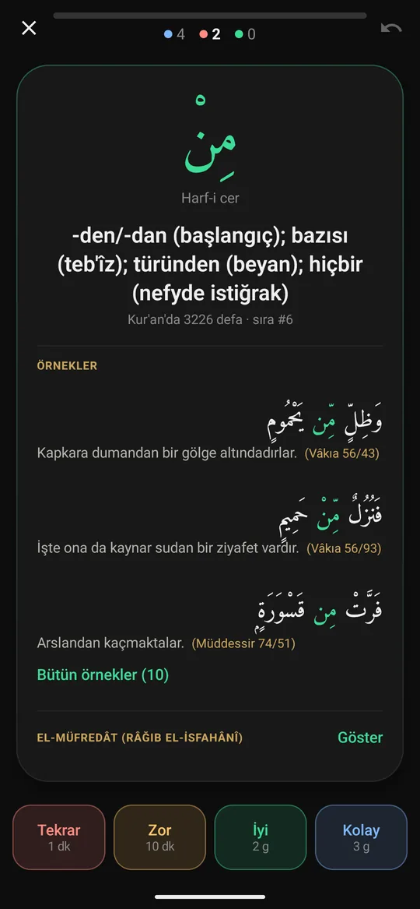
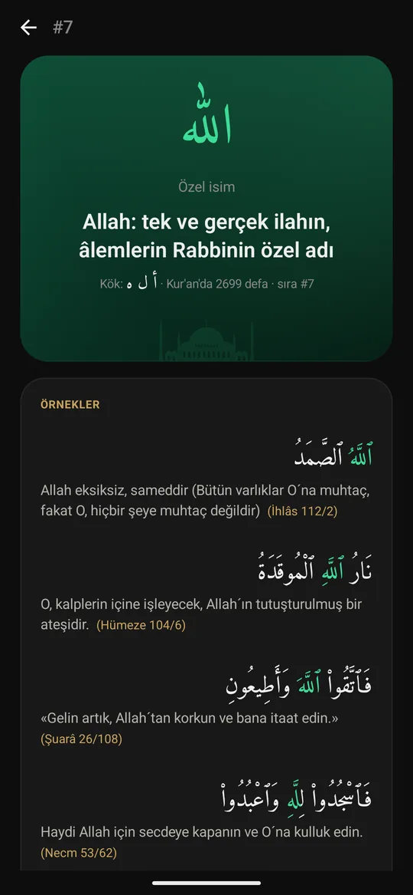
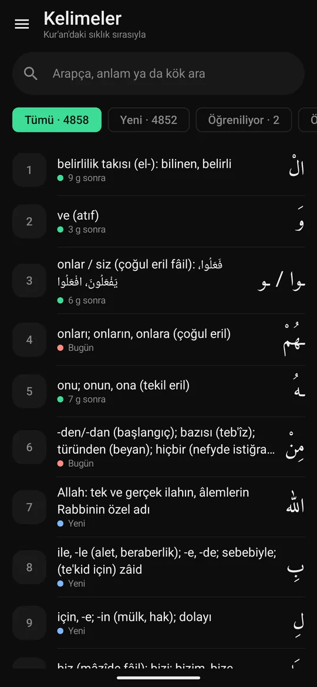

FSRS zamanlama
Anki'nin de kullandığı FSRS-6 algoritması; hedef hatırlama oranını siz belirlersiniz.
Sürüm 1.0 Google Play'e hazırlanıyor
Kur'an Kelimeleri, Kur'an'da geçen 4.858 kelimeyi en sık geçenden başlayarak öğretir. Anki'nin de kullandığı FSRS algoritması her kelimeyi tam unutmak üzereyken yeniden karşınıza çıkarır; böylece günde birkaç dakikayla kalıcı olarak öğrenirsiniz.
Neden en sık kelimelerden?
Kelimeler Kur'an'da kaç kez geçtiklerine göre sıralanır. En sık geçenleri öğrendikçe okuduğunuz ayetlerde tanıdığınız kelimeler hızla artar.
%34
En sık 10 kelime
%71
En sık 100 kelime
%88
En sık 500 kelime
%93
En sık 1.000 kelime
Nasıl hesaplanır? Yüzdeler, Kur'an metnindeki kelime geçişlerinin ne kadarını bu kelimelerin oluşturduğunu gösterir. Quranic Arabic Corpus'un ayrımına göre ön ekler ve bitişik zamirler (وَ، الْ، ـهُ gibi) ayrı kelime sayılır. Uygulamadaki “metin kapsamı” da aynı yolla hesaplanır.

Çalışma
Kartın önünde yalnızca kelime ve türü vardır. Dokununca anlamı, kelimenin geçtiği ayetler ve el-Müfredât açıklaması açılır; ne kadar iyi hatırladığınızı dört düğmeden biriyle söylersiniz.
Kelime sayfası
Listeden ya da kartın arkasından açılan kelime sayfası, kelimeyi bağlamında gösterir. Örnek ayetlerde kelime renkle işaretlenir, altında Türkçe meali yer alır.


İlerleme
Ana sayfa bugünkü çalışmanızı ve genel ilerlemenizi bir arada gösterir. Kelime listesinde her kelimenin durumu ve bir sonraki tekrar zamanı yazar.
Özellikler
Anki'nin de kullandığı FSRS-6 algoritması; hedef hatırlama oranını siz belirlersiniz.
Kelime listesi uygulamayla gelir; çalışmak için internet gerekmez.
Liste düzeltilip genişledikçe yenisi uygulama güncellemesi beklemeden iner; ilerlemeniz korunur.
İlerlemenizi dosyaya kaydedip başka bir telefona taşırsınız; Android yedeği de ilerlemenizi saklar.
Her kelime geçtiği ayetlerle; kelime ayette işaretli, altında meali.
Râğıb el-İsfahânî'nin Kur'an sözlüğünden kelimenin anlam ayrıntıları, Türkçe çevirisiyle.
Harekeli ya da harekesiz Arapça, Türkçe anlam veya kökle arayın.
Reklam ve izleme yok. Kaynak kodu ve kelime destesi GitHub'da, GPLv3 lisanslı.
Kaynaklar
Google Play
Uygulama Google Play'de kapalı teste hazırlanıyor. Herkese açıldığında bu sayfadaki düğme doğrudan Play mağazasına götürecek.
Anki kullanıyorsanız: Aynı deste Anki için de yayında kalmaya devam ediyor. En güncel sürümü GitHub'daki kelimeler.apkg dosyasından indirip Anki'ye aktarabilirsiniz.
Sürüm notları
1.0 Ekim 2026 · ilk sürüm
Sırada planlanan
Sürüm 1.0 · Android 8.0 ve üzeri · Çevrimdışı